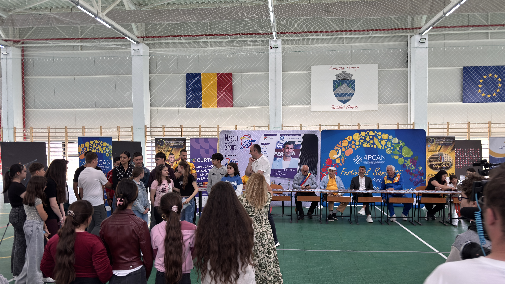

3rd Health Festival in Lerești
May 27-29, 2026 · Lerești, Argeș, Romania
Our work within the Living Lab Lerești is built on a simple premise: you cannot improve public health by just handing out medical advice or blaming individuals for their lifestyle choices. True prevention happens when communities come together to change their daily routines and support one another.
Over three action-packed days, we opened our doors to residents from both Lerești and neighboring Câmpulung, turning the Lerești Sports Hall into a hub of movement, solidarity, direct medical care, and community energy.
Rather than a formal seminar, the festival was designed as a hands-on event that broke down barriers, blended physical activity with clinical access, and created space for intergenerational connection.
What took place on the ground
Every part of the festival was meant to include every generation, whether people came from Lerești or Câmpulung. The program unfolded through a mix of sports, learning, care, and shared experiences.
- Bridging the digital and physical worlds: At Lerești Middle School No. 1, we introduced the Switch Kendama pilot project to help young people move away from passive screen time and toward focus, motor skills, and peer connection.
- Student-led workshops and local sports: Local youth ran communication workshops for their peers, alongside live demonstrations from karate, aikido, and arm-wrestling groups.
- Intergenerational football and mentorship: Regional sports figures such as Dănuț Coman, Sile Florescu, and coach Emilian Rabolu joined children on the pitch, making teamwork and mutual respect part of the event itself.
- Bringing specialists directly to the village: Volunteers provided free consultations and screenings in cardiology, pulmonology, dermatology, psychology, and psychiatry in dedicated spaces beside the activities.
The art gallery mattered
The art gallery was not a side attraction. It was a central piece of the festival because it translated prevention into a shared visual experience. Through the gallery, the festival made health feel local, memorable, and concrete, connecting medical ideas with the realities of village life.
That is why the festival worked: it did not ask residents to adapt to an institutional format. It went where people already were, and it used art, sport, and everyday community spaces to make prevention feel natural rather than abstract.
How this practical approach helps our community
By combining team sports, youth workshops, direct care, and an art gallery under one roof, we made health a shared community experience. This builds trust, strengthens local relationships, and helps staying active and getting checked become the easier, more familiar choice.
Expanding the festival over three days and welcoming neighbors from Câmpulung also helped weave stronger regional and intergenerational networks. Children, parents, teachers, doctors, and sports heroes all shared the same space, which is essential for long-term social resilience.
Through initiatives like 4P-CAN and CURTAIN, we are trying to fight chronic cardiovascular, respiratory, and oncological risks early in life. The festival showed that prevention is most effective when it is embedded in local culture, schools, and the places where communities actually live.
By focusing on real actions, local collaboration, and the joy of play, we are not just talking about health. We are putting it into motion.
Photo Gallery
The gallery below captures the energy of the festival across sports, screenings, community moments, and the art gallery that helped turn prevention into something visible and shared.


.jpeg)

.jpeg)
© 4P-CAN Project. All rights reserved. Design: Bogdan Vidrașcu based on a template from HTML5 UP.